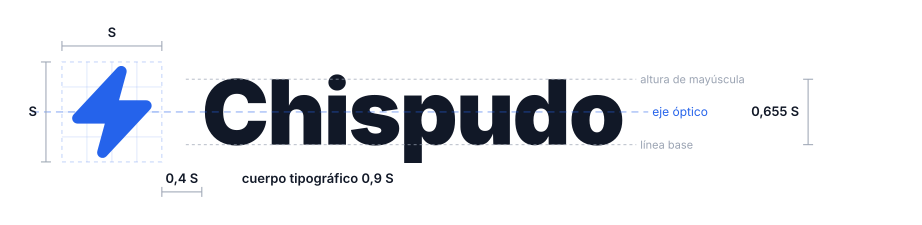
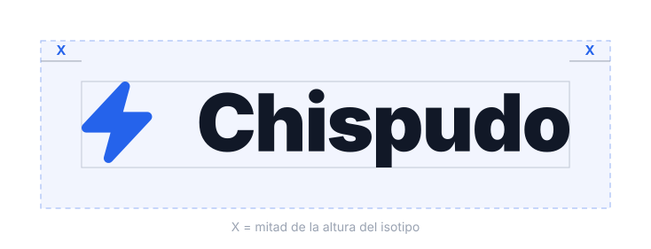

Chispudo es el rastreador de portafolio hecho para América Latina: acciones, cripto, bonos, bienes raíces, deuda privada y notas SAFE, medidos con una sola vara.
Este manual describe lo que la aplicación ya renderiza hoy: las proporciones del logo, los valores de color y la escala tipográfica salen del propio código de producto, no de una interpretación. Si un archivo de marca y la aplicación alguna vez dicen cosas distintas, gana el código y este documento se corrige.
Una herramienta de patrimonio para gente que tiene su dinero repartido en más de un país, más de una moneda y más de un tipo de activo. Chispudo junta todo eso y responde una sola pregunta con honestidad: cuánto tengo, y cuánto de eso me lo gané.
Inversionistas de América Latina con activos mezclados: una cuenta de corretaje afuera, un bono local, cripto, un fondo líquido en quetzales, una participación en una empresa privada.
Un número que se sostiene. Cada retorno se calcula neteando los aportes, así que meter dinero nunca se ve como ganancia y un depósito nunca se disfraza de rendimiento.
No opera, no mueve dinero y no tiene permiso de escritura en ningún broker. Chispudo observa y explica: nunca ejecuta.
Chispudo es la marca, y se escribe siempre completa y con mayúscula inicial. En español guatemalteco, chispudo describe a alguien despierto, que agarra las cosas al vuelo. Esa es la promesa del producto en una palabra, y de ahí sale también el rayo del isotipo. chispu.xyz es el dominio, no una forma corta de la marca: se usa como dirección, nunca como firma en lugar del logo.
Chispudo le habla a alguien que sabe de dinero pero no tiene por qué saber de finanzas cuantitativas. Explica el número, no lo decora.
| Somos | No somos |
|---|---|
| Claros: una idea por frase | Densos ni académicos |
| Exactos: si no se sabe, se dice | Optimistas por default |
| Cercanos: se habla de vos, no de usted | Solemnes ni corporativos |
| Serenos: el rojo se reserva | Alarmistas |
| Nunca guiones largos en texto visible | : , . en su lugar |
| Bilingüe siempre: español e inglés | Nada solo en uno |
| Cifras con moneda explícita | GTQ 500.00 |
| Un dato ausente se nombra | Nunca un cero inventado |
Sí: "No pudimos traer el precio de BTC en esta sesión. El total de abajo no lo incluye."
No: "Ha ocurrido un error inesperado."
El rayo es una sola figura cerrada con los dos quiebres mínimos que necesita para leerse como rayo. Menos vértices sobreviven mejor a los 16 px de una pestaña del navegador.
El redondeo no se dibuja vértice por vértice: viene de acompañar el relleno con un trazo del mismo color y unión redondeada. Misma silueta, esquinas amables, sin complicar la figura.
La geometría del rayo vive en un único archivo del producto y de ahí la toman el encabezado, el favicon, el ícono de la app y estos archivos de marca. El rayo no se vuelve a dibujar nunca.
Todo el sistema se deriva de S, el lado de la caja del isotipo. Nada en el lockup es un valor suelto: si cambia S, todo lo demás cambia con él.

Alineación vertical: el centro de la altura de mayúscula del logotipo cae sobre el centro óptico del isotipo. No se alinea por línea base ni por caja de texto, sino por eje óptico, que es lo que el ojo lee como centrado.
La versión por defecto. Se usa siempre que haya ancho: encabezados, presentaciones, documentos, firma de correo.
5,67 : 1Para formatos cuadrados o angostos donde el horizontal quedaría demasiado pequeño: redes sociales, etiquetas, merchandising.
1,63 : 1Solo cuando la marca ya está identificada en el mismo espacio, o cuando no cabe el nombre: ícono de app, favicon, avatar.
0,86 : 1Ante la duda, se usa el horizontal. El isotipo solo no es una versión más corta del logo: es una firma para cuando el nombre ya se dijo en otra parte. Un material donde la marca aparece por primera vez lleva el nombre completo.
El logo tiene dos versiones de color de pleno derecho: principal para fondos claros e inverso para fondos oscuros. En ambas el rayo se queda azul, porque el azul es la marca. Las versiones de un solo color existen para cuando el azul no es posible.

X equivale a la mitad de la altura del isotipo. Ese margen se respeta por los cuatro lados y dentro de él no entra nada: ni texto, ni otro logo, ni el borde del material, ni el filo de una fotografía.
La medida se deriva del propio logo, así que se mantiene correcta a cualquier escala sin volver a calcularla.
| Versión | Digital | Impreso |
|---|---|---|
| Horizontal | 120 px de ancho | 30 mm |
| Vertical | 64 px de ancho | 18 mm |
| Isotipo | 16 px de alto | 5 mm |
El rayo aguanta tamaños que el nombre no. Ese es exactamente el reparto de trabajo entre las dos versiones.
El logo se entrega listo. Cualquier ajuste que no sea escalarlo de forma proporcional lo rompe.
Encerrarlo en una caja o en un círculo que no sea el ícono oficial de la app, recortarlo, usarlo como patrón repetido, animarlo desarmando sus partes, ni ponerlo sobre una fotografía con detalle detrás del texto.
Tomar el archivo original de la carpeta de logos, escalarlo desde una esquina para mantener la proporción, y elegir la versión de color según el fondo. Nada más.
Nunca decoran: cada uno significa una cosa y solo esa.
| Color | Claro | Oscuro | Significa |
|---|---|---|---|
| Positivo | #059669 | #34D399 | Ganancia, confirmado |
| Negativo | #DC2626 | #F87171 | Pérdida, grave |
| Atención | #D97706 | #FBBF24 | Revisar, reintentar |
En una aplicación de dinero, el rojo se lee como pérdida. Por eso un aviso que se reintenta solo, o una sincronización que falló por horario, va en ámbar y no en rojo. El rojo queda para lo grave o lo irreversible.
Un monto negativo en un reporte impreso no va en rojo: va entre paréntesis, que es la convención de un estado de cuenta y sobrevive a la impresión en blanco y negro.
Las seis clases invertidas llevan color. Efectivo, por cobrar y otros son deliberadamente neutros, para que un vistazo separe el dinero trabajando del que solo está guardado.
Escogida en espacio OKLCH y medida con pruebas automáticas: el par más parecido queda a distancia 18,10, sobre el piso de legibilidad.
No cabe un séptimo tono sin empujar a otro debajo del piso. Lo demás se agrupa en un neutro: Otros.
En tritanopía, alternativos y fondos se acercan. Por eso junto al color siempre va el nombre de la clase.
| Patrimonio | 27,233.88 |
| Rendimiento | +3.94% |
| Deuda | (8,000.00) |
| Uso | Peso | Tracking | Ejemplo |
|---|---|---|---|
| Logotipo | Black 900 | -0,02 em | Chispudo |
| Título de página | Black 900 | -0,025 em | Todo tu patrimonio |
| Título de tarjeta | Bold 700 | -0,01 em | Asignación de activos |
| Texto corrido | Regular 400 | 0 | Cada retorno netea los aportes. |
| Etiqueta | Bold 700 | +0,1 em | Rendimiento |
| Cifra | Mono 500 / 700 | 0 | GTQ 500.00 |
Numerales tabulares, siempre. Una columna de montos que no alinea no se puede leer de un vistazo.
| Elemento | Radio | Borde |
|---|---|---|
| Tarjeta | 16 px | 1 px |
| Modal | 20 px | 1 px |
| Botón y campo | 12 px | 1 px |
| Ícono de app | circular | sin borde |
Tres niveles de texto, ni uno más. Cada uno tiene su razón de ser y su contraste medido contra el fondo de su tema.
| Nivel | Uso | Oscuro | Claro | Muestra |
|---|---|---|---|---|
| Primario | Cifras y títulos | 21.0 : 1 | 17.1 : 1 | Patrimonio |
| Secundario | Texto corrido | 8.8 : 1 | 9.8 : 1 | Texto corrido |
| Tenue | Notas y pies | 6.7 : 1 | 7.2 : 1 | Nota al pie |
Nada se comunica únicamente con color. Un signo, un símbolo o una palabra acompañan siempre al color, para que la información sobreviva a cualquier tipo de daltonismo y a una impresión en blanco y negro.
Todo control interactivo mantiene un área de toque de al menos 44 por 44 píxeles, aunque su parte visible sea más chica.
Cuando el sistema pide menos movimiento, las animaciones se hacen lentas, no se detienen: un indicador de carga congelado se lee como una pantalla trabada.
Los originales. Vectores, fondo transparente, sin límite de tamaño. Esta es la fuente para cualquier pieza nueva.
Versiones listas para usar en alta resolución, con fondo transparente, para herramientas que no aceptan vectores.
El código con el que se generó este manual y los diagramas. Permite regenerarlo cuando la marca cambie.
Ante una duda que este manual no resuelva, la respuesta está en el producto: la aplicación es la referencia viva de la marca. Si algo se ve distinto aquí, el error está aquí.